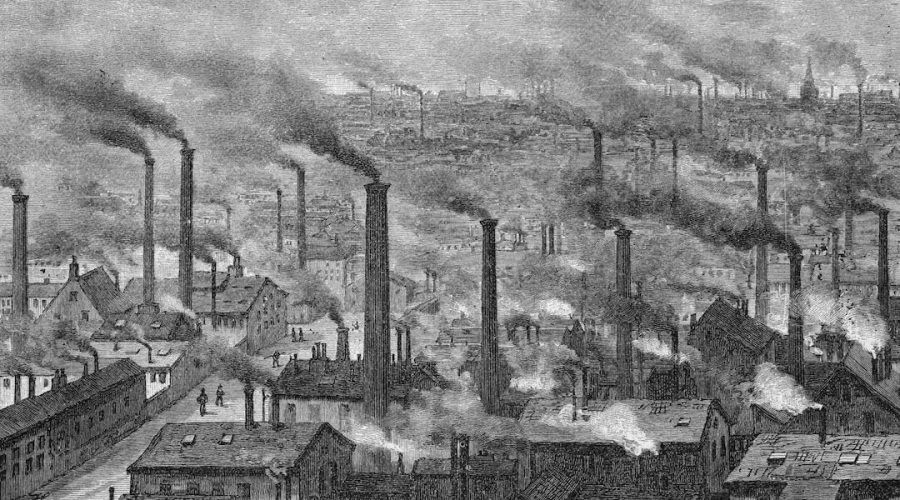

Il sistema di fabbrica che si affermò durante la prima rivoluzione industriale mutò i tradizionali rapporti sociali. La prima fase dell’industrializzazione ebbe caratteristiche per lo più artigianali in quanto i portavoce dell’uso delle macchine erano ancora gruppi di maestri artigiani e proprietari di campagna che finanziavano l’acquisto di semplici macchinari.
Con l’entrata in funzione di macchinari più complessi si resero necessari investimenti maggiori, i quali ebbero gravi conseguenze sulle piccole imprese, che si trovarono costrette a scomparire o a riunirsi in società.
Prese sempre più importanza l’intermediazione delle banche, le quali fornivano i finanziamenti necessari per il processo di industrializzazione: questo favorì la formazione di un’alta borghesia composta da grandi industriali e finanzieri da un lato, i quali possedevano il cosiddetto ‘capitale’, ovvero la proprietà dei mezzi di produzione, e dall’altro invece favorì la formazione della classe operaia che forniva il proprio lavoro per far funzionare la produzione.
Si affermava dunque il cosiddetto Sistema Capitalistico.
 Le fabbriche della città di Manchester durante la prima rivoluzione industriale.